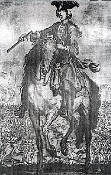

Blar Na H-eaglaise Brice
Le Donnchadh Ban Mac an t-Saoir
Battle of Falkirk (17th January 1746) - Bataille de Falkirk (17 janvier 1746)
by/par Duncan Ban MacIntyre
Tune
(the same tune as Alexander of Glengarry)Sequenced by Christian Souchon
Same song
Sung by Captain Donald Joseph McKinnon, recorded by Dr Alasdair McLean in October 1952 in Falkirk.

|
THE BATTLE OF FALKIRK
1. Though I'm here crouching lowly In a gloomy, lonely dwelling, Once I was in a good company Though they chased to put me from them; Oft I look towards the hillside To see thy image, John Mac Rory, [1] And if I should see thee coming My heart from sorrow would awaken. 2. My mind from sorrow would awaken Were I with thee, John Mac Rory, I would tell thee what I knew of, And what I knew not would be asking; On that day the blows were given I indeed did see them striking, On the King's side they were routed, 'Twas on us that dread descended. 3. 'Twas a dreadful tale to tell of, That King George's folk were routed, Before the blows they fled in terror When they but beheld Prince Charlie; Not a pair remained together Between Edinbro' and Stirling, [2] In many a steading were some of them Taking shelter when the night fell! 4. We were bold and full of courage Going up towards the hillside But before we got in order [3] Down upon us came the Rebels! Not for long the field did we hold When we scattered from each other, Then indeed the red-coat soldiers Did receive a thorough mauling. 5. It gave to our foes assistance That of leading we were wanting, To fire we never got the order When the enemy came upon us; Then we fled off at full gallop, Waiting not to be together, Ne'er before was such a thing seen Since the day of Inverlochy.[4] 6. I, together with Mac Patrick Travelled over the moss and moorside, If we had not then gone fleeing Our lives for certain had been taken; All our Englishmen retreated At the onslaught of Clan Donald, 'Twould indeed their lives have shortened To have faced the mighty heroes. 7. 'Twould indeed their lives have shortened To have faced that race in battle, Who had come to win the kingdom For their King and for the right cause; Many an unflinching hero Between Kintail and Strathlochy [5] Had put shoulder close to shoulder, And in conflict great their value. 8. Great their value in the conflict, Mighty, valiant, fearless heroes, Both the Camerons and Clan Donald [6] And the brave men in their party; And if they had got the fair play Of the Feinne [7], between their foemen And themselves, not all of Europe Could have kept King George from falling. 9. Alone the Highlanders in Scotland Would have caused King George's downfall, If they had been all of one mind [8] In the year when came the rising; If they all had been together, They, the mighty valiant heroes, Who were wonted to be hardy, And were dwelling 'midst the Mountains. [9] 10. That day when they fought Culloden Fortune to us was but bitter, In an ill hour Duke William, [10] Great the harm he's been to Scotland! For the chieftains' lands are forfeit, And the yeomen are disarmed, Now we'll wear but hat and black coats [11] In the place of checkered tartans. 11. Now we'll wear but hat and black coats In the stead of new-made tartans, Stockings too, and light-grey trousers, Round the knee-tops tightly fastened; When we've lost our arms and clothing How can we be ever happy? With out light-grey clumsy long coats, Ne'er ere now seen in our country. 12. Ne'er ere now was in our country Aught but handsome new-made clothing, Never did we have to change it Till our fame was from us taken; Lost we likewise all our world's goods, Our men and our money with it, All our gaiety and gladness, Bitter is that tale to tell it. 13. Bitter is that tale to tell it, Of the men we lost for ever, Who that day fell at Culloden And got their death-wounds in the battle; Down a troop came from behind them, [12] Three to one man were before them, Had they had but fortune's fairness Havoc they'd have wrought ere fled they. 14. No renown have had the Gaëls Since Prince Charles left us for exile, We are left like lambs unmothered, Without cause for joy or laughter; Now we are to England yielding, And King George's host do follow; Part of every prayer we offer, May he go home to Hanòver! 15. We shall yet remain a-hoping That young Charles shall come back to us, And if he should come back quickly Then would our brave spirits waken; Every man would rise up with thee, And we all would be as faithful In battlefield or facing fighting, We would ne'er refuse a danger. 16. Ne'er again would we refuse thee, 'Tis the prayer we'd soonest granted That the Frenchmen would come over With Prince Charles to lead the army; Camerons would come from Lochy,[13] MacIntyres, MacDonalds with thee, Whose like was ne'er within our borders Since the Clanna Baoisge [14] ended 17. And the MacNabs [15] would rise with thee, Mighty, vigorous, war-like, loyal, Well-targed, well-armed, loudly shouting, With their banners and their muskets; When they draw their swords a-shining Of cutting edges, and their halberds, Striking, wounding, shouting, banded, In the onset they were famous. 18. Gregors, too, of might unfailing, Ever were they noble, loyal, In time of trouble, war, or quarrel, Where was aught heard to their ill-fame? Charging down 'gainst lead and power In defeat they're e'er unyielding; While you keep your ancient spirit Never shall your foes subdue you. [16] 19. Every northern clan will join you, Both the nobles and the commons, With heart-felt keenness and all goodwill Since thou'st placed thy hope in justice; We'll all bear the same love to thee, Since we have one cause in common, 'Tis thy cause, O Prince Charles Stewart, Since our peace comes with thy crowning. Translated by John Lorne Campbell in "Highland Songs of the '45" (1932) |
BLAR NA h-EAGLAISE BRICE
1. Sed a tha mi 'n so chrùban Ann an sean-taigh ùdlaidh, uaigneach, Bha mi roimhe mar ri cuideachd, Ged a thuit dhaibh mo chur uapa; Is tric mì 'g amharc ris an aonach Am faic mi t'aogas, Iain Mhic Ruairidh, Us nam faicinn thù ri tighinn Dh'éireadh mo chridhe o smuairean. 2. Dh'éireadh m' inntinn-se o smalan, Mì bhith mar riut, Iain Mhic Ruairidh, Dh'innsinn dhuit na bhiodh air m'aire, 'S bhithinn farraid na bhiodh uam dheth; An là sin thug iad na buillean, 'S mìs' a chunnaic bhith 'gam bualadh, Chaidh an teich' air taobh Rìgh Deórsa, Is ann oirnne thàin' am fuathas! 3. B'é 'n sgeul an fhuathais r'a innse Gun do theich an Rìgh 's a mhuinntir, Ghabh iad eagal roimh na buillean, 'N uair a chunnaic iad am Prionnsa; Cha d'fhan duine dhiubh r'a chéile Eadar Dun-Eideann us Sruibhleadh, 'S iomadh baile 'san robh pàirt dhiubh Gabhail tàimh air teachd na h-oidhche! 4. Bha sinn gu misneachail dàna, Dol an aird a dh'ionnsaigh 'n t-sléibhe, 'S mu'n deachaidh sinn ceart an ordugh Thàinig iadoirnne na Reubail! Cha b'fhada mheal sinn an àrach 'N uair a sgànr sinn as a chéile, 'S ann an sin a bha 'n droch-càradh Air na bhà luchd aodaich dhéirg ann. 5. Rinn e cuideachadh d'ar nàimhdibh Gun robh dìth comanndaidh oirnne; Cha d'fhuair sinn ordugh gu làmhach An am do chàch bhith tighinn 'nar comhdhail; 'S ann a theich sinn ann ar deannaibh, 'S cha n-fhanamaid ri bhith comhla, Cha n-fhacas roimhe a leithid O'n thugadh là Inbhir-Lóchaidh.(1) 6. Bha mis' us Calum Mac Phàdhruig Siubhail càthair agus móintich, 'S mura teicheamaid 'san am ud 'S cinnteach gum biodh calldachd oirnne; Ghabh na bh' againn de luchd Beurla An ratreuta roimh Chlann Domhnuill, Sud a ghiorraicheadh an saoghal, Dol ri h-aodainn nam fear móra! 7. B'é sud a ghiorraicheadh an saoghal Dol a chaonnag ris a' phór ud, Thàin' a chomhsachadh na rìoghachd As leth an Rìgh us na córach; 'S iomadh laoch gun athadh-làimhe Eadar Ceann-t-sàile 's Srath Lóchaidh A chuireadh an guaillean r'a chéile, 'S bu mhór am feum anns a' chomhraig. 8. Bu mhór am feum anns a' chomhraig, Na fir mhóra bha neo-sgàthach, Eadar Chamshronaich us Chlann Domhnuill, 'S na bha chomhlain ann am pàirt riu; 'S nam faigheadh iad cothrom na Féinne(2) Eadar iad féin us an nàmhaid, Dh'aindeoin na bha anns an Roinn Eórpa, Chuireadh iad Rìgh Deórs' as 'àite. 9. Chuireadh iad Rìgh Deórs' as 'àite, Na bha 'Ghàidheil ann an Alba, Nam biodh iad uile mar a bhà iad A' bhliadhna thàinig an armailt; Nam biodh iad uile r'a chéile, Gum biodh iad na treun-fhir chalma Dh'am bu dùthchas a bhith cródha, Bha chomhnuidh am measg nan Garbh-chrìoch. 10. An là sina thug iad Cùil-lodair, Cha robh 'm fortan ud ach searbh dhuinn, Choisinn Diùc Uilleam (3)'san droch-uair, 'S mór an rosad é do dh'Alba! Chaill na cinn-fheadhna am fearann, 'S an tuath-cheathairn' an cuid armachd, Cha bhi oirnn ach ad us casag An àite nan deiseachan ball-bhreac. 11. Cha bhi oirnn ach ad us casag, An àite nam breacanan ùra, Stocainnean us briogsa glasa, 'S iad air glasadh mu na glùinean; 'N uair chaill sinn ar n-airm 's ar n-aodach, Cia mar dh'fhaodas sinn bhith sunndach? Le'r casagan leobhar liath-ghlas Nach robh roimhe riamh 'nar dùthaich. 12. Cha robh roimhe riamh 'nar dùthaich Achaodaichean ùra rìomhach, 'S chaoidh cha b'éiginn am mùthadh, Gus na chaill sinn cliù na rìoghachd; Chaill sinn ris ar cuid de'n t-saoghal, Chaill sinn ar daoine us ar nì ris, Chaill sinn ar n-aighear us ar n-éibhneas, 'S goirt an sgeul duinn bhith 'ga innse. 13. 'S goirt an sgeul a bhith 'ga innse Na chaidh dhith oirnn de na daoine, Na thuit dhiubh latha Chùil-lodair, 'S a fhuair andochann anns a' chaonnaig; Thàinigan trup orr' o'n cùlaibh, Triùir mu'n aon duin' air an aodainn, 'S nam faigheadh iad cothrom cùise, Rinn iad diùbhail mu'n do sgaoil iad. 14. Cha robh meas air Clanna Ghàidheil O'n dh'fhalbh Teàrlach uainn air fógradh, Dh'fhàg e sinn mar uain gun mhàthair, Gun adhbhar ghàire,gun sólas; Sinn a' géilleadh do Shasunn, 'S ag éirigh am feachd Rìgh Deórsa; Cuid de'r n-iarrtas us de'r n-athchuing E dhol dachaidh do Hanóbhar! 15. Bidh sinn fathast ann an dóchas Gun tig Teàrlach ógdo'n rìoghachd, 'S nan tigeadh e oirnn a chlisgeadh, Dh'éireadh ar misneach us ar n-inntinn; Dh'éireadh leat a h-uile duine, 'S bhiomaid uile dhuit cho dìleas, An adhbhar blàir no 'n làthair cumaisg Cha bhiodh cunnart oirnn gun dìobradh. 16. Chaoidh, cha dìobramaid gu bràth thù, 'S é 'n achanaich a b'fhearr leinn fhaotainn, Gun tigeadh iad oirnn na Frangaich 'S Teàrlach bhith air ceann nan daoine; Dh'éireadh Camshronaich o Lóchaidh(5), Domhnullaich us Clann-an-t-saoir leat, 'S cha robh 'n leithid anns na crìochan O'n a chrìochnaich Clanna Baoisge.(6) 17. Gun éireadh leat Clann-an-Aba(7) Làidir, neartmhor, feachdail, rìoghail, Gu targaideach, armailteach, tart'rach, Luchd nam bratach us nan cuilbheir; Ri h-am rùsgadh nan lann glasa, Nam faobhar sgaiteach, us nam pìcean, Builleach, guineach, beumach, buidhneach, 'S bu chliùiteach an am dol sìos iad. 18. Griogairich gun fhàillinn cruadail, Bha iad riamh gu h-uasal rìoghail An am cogaidh, troid, no tuasaid, C'àit' an cualas bonn d'am mì-chliù? Dol an aghaidh teine 's luaidhe, An am na ruaige cha b'iad a strìochdadh; 'S fhad 's a leanas sibh r'ur dualchas Cha tuit sibh le fuath luchd mì-rùin. 19. Eiridh gach fine o thuath leat Eadar uaislean agus ìslean, Le toil an cridhe us an dùrachd, O'n a chuir thu t'ùidh 'san fhìrinn; Bidh sinn uile 'san aon rùn duit O'n is ionann cùis mu'm bì sinn, Ann ad adhbhar, Theàrlaich Stiùbhairt, O'n 's é do chrùnadh a bheir sìth dhuinn. |
LA BATAILLE DE FALKIRK
1. Si dans un gîte solitaire Je cache mes jours désormais, Jadis je fréquentais mes frères Dont on a su me séparer; Souvent regardant nos montagnes, Je te revois, John Mac Rory, [1] C'en serait fini de mes larmes Si tu revenais au pays. 2. C'en serait fini de ma peine. Je te dirais les choses qui M'auraient apparu pour certaines, Ou dont je me serais enquis; Le jour où tant de coups tombèrent Oui, ce jour-là, moi j'y étais, Les gens du Roi se débandèrent; C'est nous que la peur tenaillait. 3. C'est une histoire terrifiante: Oui, l'armée du Roi avait fui Les coups, en proie à l'épouvante A la simple vue de Charlie; Et ce n'était que débandade D'Edimbourg jusques à Stirling, [2] Certains venaient dans les étables Chercher un abri pour la nuit! 4. C'était pourtant avec courage Que nous grimpions vers le sommet. Nous nous rangions pour la bataille [3] Quand les rebelles ont chargé! Nous ne pûmes leur tenir tête Et nous nous sommes dispersés, Pour les Tuniques rouges cette Attaque fut une raclée. 5. Nos ennemis eurent la chance De nous trouver sans officiers, Quand ils approchent nul ne pense A donner l'ordre de tirer; Nous, au galop nous détalâmes, Sans attendre d'être assemblés, On n'avait vu telle pagaille Depuis le jour d'Inverlochy. [4] 6. Calum Mac Patrick et moi-même Filons par landes et guérets, C'en valait certes bien la peine Nos vies étaient en grand danger; Nos Anglais battaient en retraite Devant l'assaut des McDonald, Et s'ils leur avaient tenu tête, Cela leur eût été fatal . 7. A ce combat, leur tenir tête, Certes leur eût été fatal: Car le royaume était leur quête Le rendre aux Stuart, leur idéal; Plus d'un de ces gaillards stoïques Entre Kintail et Strathlochy [5] En un coude à coude héroïque, Se surpassait dans ce conflit. 8. Se surpassaient dans la bataille De puissants et vaillants héros, Des Clans Cameron, McDonald [6] Et leurs alliés fiers et loyaux; Si cette "Féinné" guerrière [7] Eût animé leurs opposants Même l'Europe tout entière N'eût sauvé Georges, l'intrigant. 9. Les Highlanders sans aide aucune Auraient pu renverser le Roi, En faisant taire leurs rancunes [8] Pour parler d'une même voix; S'ils avaient été solidaires, Ces puissants et vaillants héros, Avec l'énergie coutumière, Aux habitants du Pays Haut. [9] 10. A Culloden, l'ingrate plaine Vit sur nous s'acharner le sort, Le Duc Guillaume [10], armé de haine, A l'Ecosse fit tant de tort! Nos chefs déchus de leurs tenures, Ont dû désarmer tous leurs gens, Nous portons capes et coiffures Noires, au lieu de nos tartans [11]. 11. Des chapeaux noirs, des redingotes Et non nos kilts toujours soignés, Des bas et de grises culottes, Serrées au dessus des mollets; Sans nos hardes et sans nos armes Comment serions-nous satisfaits De ces longs manteaux sans nul charme, Que nul ici ne vit jamais? 12. Ici, jamais un homme honnête Ne sortait sans son beau tartan; Il a fallu cette défaite Pour amener ce changement; Et nous perdîmes nos richesses Et nos hommes et notre argent, Notre entrain et notre allégresse, Bien triste histoire, assurément! 13. En vérité, bien triste histoire, Que celle de ces vies perdues! A Culloden on a vu choir Blessés à mort, nos hommes qui, Bien qu'attaqués sur leurs arrières [13] Et faisant face à trois contre un, Vigoureusement résistèrent, Avant de subir leur destin. 14. C'en est fait des gloires gaëlles Depuis que Charles est exilé, Nous sommes comme ces agnelles Que l'on vient juste de sevrer; Nous les vaincus de l'Angleterre, Servons dans l'armée de leur roi; Mais notre vibrante prière, C'est: "Hanovre, rentre chez toi!" 15. Nous gardons la folle espérance De voir Charlie nous revenir. Pour peu qu'il fasse diligence Notre ardeur pourrait ressurgir; Pour lui tous reprendraient les armes, Oui tous! Et loyaux comme avant, Dédaignant dangers et alarmes, Iraient au combat hardiment. 16. Nul ne lui dénierait son aide, Et le plus ardent de nos souhaits C'est qu'un jour les Français reviennent Avec Charlie, chef de l'armée; Avec McIntyre, McDonald, Cameron venu de Lochy [13], Qu'en bravoure ici nul n'égale Depuis les Clanna Baoisge [14]. 17. Le Clan McNab [15] viendrait en masse, Ces gens combatifs et loyaux, Avec leurs chants, avec leurs armes, Et leurs mousquets et leurs drapeaux; Lorsqu'ils brandissaient leur épée, Frappant, taillant, blessant, hurlant, Ou leur hallebarde acérée, Pour l'attaque, quel fameux clan!. 18. Les McGregor, sûrs de leur force, Furent toujours loyaux et droits, Lors des troubles que vit l'Ecosse, Ont-ils jamais trahi leur foi? Ils continuaient sous la mitraille De se battre, ayant le dessous. De toi, montrant la même hargne, Qui donc pourrait venir à bout? [16] 19. Ceux du Nord entreraient en lice, Les nobles et les simples gens, -Pour toi qui crois en la justice-, Avec un profond dévouement. Servir ce que ta cause ordonne: Voilà quel est notre devoir Et te rendre un jour ta couronne, Gage de paix, Charles Stuart! (Trad. Ch.Souchon (c) 2004) |
|
[1]
John McRory
is unknown, as is Calum McPatrick in stanza 6. It has been supposed to refer to the Prince, but this seems highly improbable.
[2] From Edinburgh to Stirling : the dispersion of Hawley's army after the battle was complete and thorough. [3] No firing order : there is no reference to this in accounts of the battle, but it is not an improbability. [4] Battle of Inverlochy : Fought February 2, 1645, when Montrose, with 1,500 Royalist Highlanders, defeated 3,000 Campbells and Lowland Covenanters, with a loss of 1,700 men. Argyle left the command of his forces to Campbell of Auchinbrech, taking refuge in a vessel on Loch Linnhe. This defeat broke the power of the Campbells in the Highlands for many years (cf. German Cannibal , st. 8 and Morag , stanza 35) [5] between Kintail and Strathlochy : i.e. McDonalds and Camerons. [6] Both the McDonalds and Camerons played a leading part in the victory. [7] The "Feinne" : i.e. "equal combat." The Fianna never fought an enemy with more than the enemy's number. The expression "cothrom na Féinne" is proverbial in Gaelic in this sense. The Fianna's power was finally broken at the Battle of Gabhra (Gowra) in 285 A.D. -In Gaelic mythology, the Fianna were Irish warriors who served the High King of Ireland. In the AD 3rd century, their adventures were recorded in the Fenian Cycle. Their last leader was Finn Mac Cumhail whose son was Oisin, McPherson's Ossian. [8] All of one mind : cf. German Cannibal , st. 1. This is probably true but it never could have happened. [9] The Garbh-chtiochan (= the Rough Bounds) comprise the districts of Arisaig, Moidart, Morar and Knoydart, but the expression is also more generally used for the Highlands north of Perthshire and Argyllshire. [10] In an ill hour won Duke William ( Cumberland). THis is indeed a significant sentiment for a Hanoverian Highlander to express! [11] Acts were passed to ban the carrying of weapons, the wearing of tartan and even the playing of bagpipe [12] From behind them, three to one man : at Culloden, at the beginning of the attack, the dragoons on the Duke's left were allowed to pass the rear of the Prince's army without receiving one shot. Cumberland had about 8500 and the Prince about 5000 men. [13] Lochy : River by which are located the main possessions of the Barony of Lochiel. [14] The Clanna Baoisge (Children of beams of light) are a clan mentioned in the "Lay of Diarmaid". [15] In 1745 John, 15th Chief of Clan McNab fought for the House of Hanover, but parts of the clan fought for the Stuarts under Acharn, Inchewen and Dundurn. [16] McGregor : cf. Coming of the Prince , note 8. Most of these notes are taken from John Lorne Campbell's 'Highland songs of the '45'. |
[1]
John McRory
est inconnu, tout comme l'est Calum McPatrick à la strophe 6. On a dit qu'il s'agirait peut-être du Prince, mais c'est peu probable.
[2] D'Edimbourg à Stirling : la dispersion de l'armée de Hawley après la bataille fut complète et totale. [3] Pas d'ordre de feu : les chroniqueurs de la bataille n'en parlent pas, mais c'est dans l'ordre du possible. [4] Bataille d'Inverlochy : livrée le 2 février 1645 par Montrose qui, avec 1.500 royalistes des Highlands, défit 3.000 Campbells et Covenantaires des Lowlands. Il y eut 1.700 tués. Argyle abandonna le commandement de ses troupes à Campbell d'Auchinbrech, pour se réfugier dans un bateau sur le Loch Linnhe. Cette défaite brisa le pouvoir des Campbells dans les Highlands pour de nombreuses années. [5] Entre Kintail et Strathlochy :c.à.d. dans les clans McDonald et Cameron. [6] Tant les McDonald que les Cameron furent les principaux artisans de la victoire. [7]-La "Feinne" dont il est question est un mot gaélique signifiant "combat équitable"." Les Fianna ne combattaient jamais un ennemi, s'ils étaient supérieurs en nombre. Leur pouvoir fut anéanti à la bataille de Govra (Gabhra) en 285 après J.C. -Dans la mythologie gaélique, les Fianna étaient des guerriers au service du Haut-Roi d'Irlande. Au 3ème siècle après JC, leurs aventures furent consignées dans le "Cycle des Fianna". Leur dernier chef fut Finn mac Cumhail (Fingal) dont le fils Oisin, n'était autre que l' Ossian de McPherson. [8] Faisant taire leurs rancunes : cf. Cannibale allemand , strophe 1. C'est probable, mais ce ne fut jamais le cas. [9] Les Garbh-chtiochan ("les rudes confins") désignent les districts de Arisaig, Moidart, Morar et Knoydart, et, plus généralement, la partie des Highlands située au nord du Perthshire et de l'Argyllshire. [10] Duc Guillaume : Cumberland "le Boucher". Une phrase qui en dit long sur les véritables sentiments d'un soldat hanovrien! [11] Des lois furent promulguées interdisant le port des armes, du tartan et même l'usage de la cornemuse. [12] Sur leurs arrières; à trois contre un : à Culloden, au début de l'attaque on laissa les dragons du Duc prendre position sur les arrières de l'armée du Prince sans essuyer un seul coup de feu. Cumberland avait 8.500 hommes environ et Charles 5.000. [13] Lochy : Rivière qui traverse les principales possessions de la Baronie de Lochiel. [14] Les Clanna Baoisge ("Enfant des rayons de lumière") sont le clan mythique dont parle le "Lai de Diarmaid". [15] En 1745 John, 15ème Chef du Clan McNab combattit pour la Maison de Hanovre, mais de nombreux membres du Clan se rangèrent dans le camp des Stuarts avec Acharn, Inchewen et Dundurn. [16] McGregor : cf. Venue du Prince , note 8. La plupart de ces notes provient des 'Chants des Highlands de 1745' de John Lorne Campbell. |